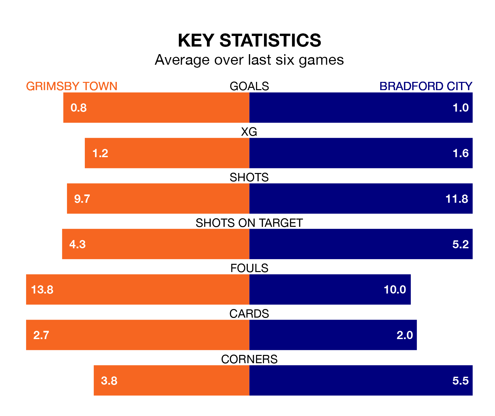

Bradford City travel to Grimsby Town on Monday lunchtime in EFL League Two.
The visitors come into the game on the back of a win in their last match, having beaten Tranmere Rovers 2-0 at home, with goals from Calum Kavanagh and Bobby Pointon.
The Mariners, meanwhile, lost their last match, 3-1 against Barrow, with their goal scored by Justin Patrick Nnamdi Obikwu.
In the last 10 years, Grimsby and Bradford have played each other on eight occasions. Bradford won four of them and they drew four times.
On average, the Mariners scored 0.9 goals and the Bantams 1.4 in those matches.
Their last meeting was on October 10, when Bradford won 2-1 away.
Grimsby are 21st in the table after 39 games, of which they have won eight and drawn 15, earning 39 points.
Bradford are seven places ahead of Town in 14th, with 14 wins and 11 draws putting them on 53 points.
The Mariners are in disappointing form in EFL League Two, with one win and three draws from their last six games.
With two wins and four losses over that period, City's form is similar – they have both taken six points from 18.
With 48 goals in 40 games so far this season, the Bantams are scoring at below the league average rate with 1.2 goals per game. But they are conceding fewer than average too, letting in 53 goals at a rate of 1.3 per game.
The home side are also below average scorers, with 1.3 goals per game, compared to a league average of 1.5. They have conceded 1.7 goals per game.
Updated: 10:31 (UTC), 31/03/24